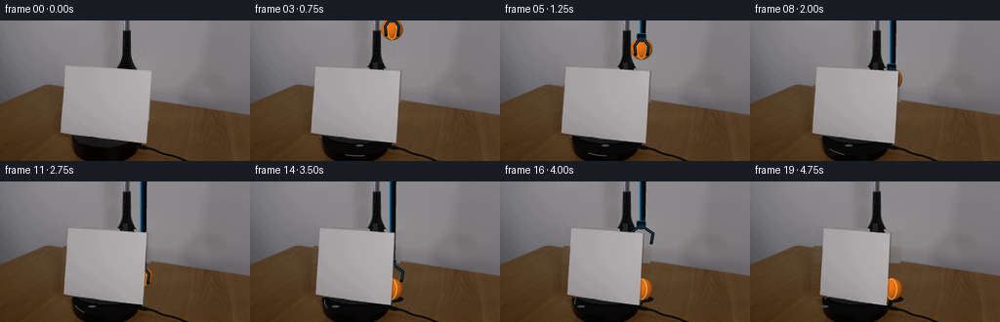
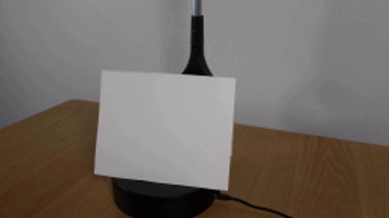
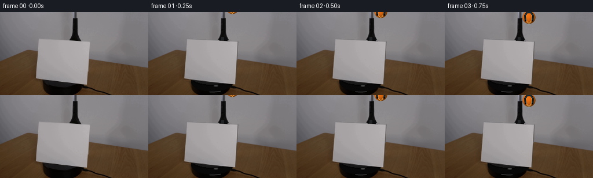
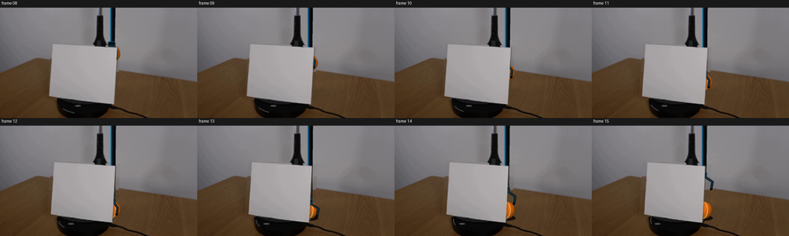

CODING AGENTS AS PIXEL WORLD MODELS
traex/GPT-5.6-Sol · 0006
点击播放 · 原生 RGB 像素
逐轮保存的候选
回放视频、检查图与代码变化。
每份候选均可单独播放。实际图片检查记录在下方工具轨迹中。
候选 01播放与检查图
点击播放 · 原生 RGB 像素

展开代码变化
--- 上一保存版本
+++ 本次保存版本
@@ -0,0 +1,202 @@
+from pathlib import Path
+
+import cv2
+import numpy as np
+from PIL import Image, ImageDraw, ImageFilter
+
+import artifact_io
+
+
+ROOT = Path(__file__).resolve().parent
+W, H, S = 256, 144, 4
+N = 20
+
+
+def clean_backplate(src):
+ """Reconstruct the small area initially hidden by the card."""
+ out = src.copy().astype(np.float32)
+ card = np.zeros((H, W), np.uint8)
+ cv2.fillConvexPoly(card, np.array([[66, 46], [155, 50], [151, 126], [61, 118]], np.int32), 255)
+
+ # Horizontal interpolation works well here because both the wall and the
+ # wooden tabletop continue naturally on either side of the card.
+ rng = np.random.default_rng(86)
+ for y in range(43, 129):
+ xl, xr = 54, 169
+ left = src[y, xl].astype(np.float32)
+ right = src[y, xr].astype(np.float32)
+ for x in range(58, 159):
+ if card[y, x]:
+ q = (x - xl) / (xr - xl)
+ col = left * (1 - q) + right * q
+ col += rng.normal(0, 0.8, 3)
+ out[y, x] = col
+
+ out = np.uint8(np.clip(out, 0, 255))
+
+ # Continue the central black support and the turntable through the area
+ # that was hidden in the photograph.
+ lay = Image.fromarray(out).convert("RGBA")
+ d = ImageDraw.Draw(lay, "RGBA")
+ d.polygon([(124, 43), (136, 44), (141, 106), (116, 108)], fill=(12, 13, 14, 255))
+ d.polygon([(126, 43), (130, 43), (128, 105), (120, 107)], fill=(34, 35, 36, 170))
+ d.ellipse((74, 104, 146, 137), fill=(8, 8, 8, 255))
+ d.ellipse((75, 103, 145, 127), fill=(24, 24, 25, 255), outline=(4, 4, 4, 255), width=2)
+ d.ellipse((80, 106, 141, 121), fill=(40, 40, 42, 190))
+ return np.array(lay.convert("RGB"))
+
+
+def card_quad(i):
+ # A yaw around the vertical support: the right edge recedes to the left.
+ # This is the image-plane signature of clockwise rotation seen from above.
+ a = np.deg2rad(2.05 * i)
+ c = 108.5
+ shrink = np.cos(a)
+ # Mild perspective asymmetry makes this read as rotation rather than scale.
+ q = np.array([[67., 47.], [154., 51.], [150., 125.], [62., 117.]], np.float32)
+ for k in range(4):
+ old = q[k, 0]
+ q[k, 0] = c + (old - c) * shrink - 0.045 * i
+ q[0, 1] += 0.045 * i
+ q[3, 1] += 0.055 * i
+ q[1, 1] += 0.11 * i
+ q[2, 1] += 0.10 * i
+ return q
+
+
+def draw_ball(layer, cx, cy, r=11.2, seed=0):
+ """Paint a softly textured orange tennis ball onto a high-res RGBA layer."""
+ a = np.array(layer)
+ yy, xx = np.mgrid[0:H*S, 0:W*S]
+ X, Y, R = cx*S, cy*S, r*S
+ dx, dy = (xx - X) / R, (yy - Y) / R
+ rr = dx*dx + dy*dy
+ inside = rr <= 1.0
+ z = np.sqrt(np.maximum(0, 1 - rr))
+ # Warm orange felt, lit from upper-left.
+ light = np.clip(.46 + .44*z - .17*dx - .19*dy, .20, 1.0)
+ rng = np.random.default_rng(1200 + seed)
+ fuzz = rng.normal(0, 4.0, rr.shape)
+ rgb = np.zeros((*rr.shape, 3), np.float32)
+ rgb[..., 0] = 232*light + 22 + fuzz
+ rgb[..., 1] = 102*light + 18 + fuzz*.45
+ rgb[..., 2] = 16*light + 4
+ edge = np.clip((1.025 - np.sqrt(rr)) * 30, 0, 1)
+ alpha = (inside.astype(np.float32) * edge * 255)
+ patch = np.dstack([np.clip(rgb, 0, 255), alpha]).astype(np.uint8)
+ ball = Image.fromarray(patch, "RGBA")
+
+ # Tennis-ball seam: a pair of subtle cream curves following the sphere.
+ seam = Image.new("RGBA", (W*S, H*S), (0, 0, 0, 0))
+ sd = ImageDraw.Draw(seam, "RGBA")
+ box1 = ((cx-r*.72)*S, (cy-r*.98)*S, (cx+r*.50)*S, (cy+r*.98)*S)
+ box2 = ((cx-r*.49)*S, (cy-r*.98)*S, (cx+r*.73)*S, (cy+r*.98)*S)
+ sd.arc(box1, -83, 82, fill=(255, 205, 111, 190), width=max(2, S))
+ sd.arc(box2, 97, 262, fill=(255, 205, 111, 190), width=max(2, S))
+ layer.alpha_composite(ball)
+ layer.alpha_composite(seam)
+
+
+def draw_tool(layer, cx, grip_y, open_claws=False):
+ """A slim blue-black mechanical grabber reaching down from off-screen."""
+ d = ImageDraw.Draw(layer, "RGBA")
+ X, Y = cx*S, grip_y*S
+ # Soft shaft shadow, dark body, blue enamel and a narrow specular glint.
+ d.line([(X+2*S, -8*S), (X+1*S, (grip_y-12)*S)], fill=(0, 0, 0, 80), width=6*S)
+ d.line([(X, -10*S), (X, (grip_y-12)*S)], fill=(7, 16, 23, 255), width=5*S)
+ d.line([(X-1*S, -10*S), (X-1*S, (grip_y-12)*S)], fill=(13, 67, 102, 255), width=2*S)
+ d.line([(X-2*S, -10*S), (X-2*S, (grip_y-12)*S)], fill=(73, 138, 170, 145), width=S)
+
+ # Black/blue actuator collar.
+ d.rounded_rectangle((X-5*S, (grip_y-15)*S, X+5*S, (grip_y-8)*S), radius=2*S,
+ fill=(8, 11, 14, 255), outline=(33, 78, 101, 255), width=S)
+ d.ellipse((X-4*S, (grip_y-11)*S, X+4*S, (grip_y-6)*S), fill=(15, 40, 54, 255))
+
+ spread = 7.0 if not open_claws else 12.0
+ bottom = grip_y + (7 if not open_claws else 8)
+ # Curved opposing claws, with blue outer highlight.
+ left = [(X-3*S, (grip_y-8)*S), ((cx-spread)*S, (grip_y-2)*S),
+ ((cx-spread*.86)*S, bottom*S)]
+ right = [(X+3*S, (grip_y-8)*S), ((cx+spread)*S, (grip_y-2)*S),
+ ((cx+spread*.86)*S, bottom*S)]
+ d.line(left, fill=(4, 7, 9, 255), width=3*S, joint="curve")
+ d.line(right, fill=(4, 7, 9, 255), width=3*S, joint="curve")
+ d.line(left, fill=(20, 76, 105, 230), width=S, joint="curve")
+ d.line(right, fill=(20, 76, 105, 230), width=S, joint="curve")
+ d.ellipse(((cx-spread*.86-1.6)*S, (bottom-1.4)*S,
+ (cx-spread*.86+1.6)*S, (bottom+1.4)*S), fill=(5, 6, 7, 255))
+ d.ellipse(((cx+spread*.86-1.6)*S, (bottom-1.4)*S,
+ (cx+spread*.86+1.6)*S, (bottom+1.4)*S), fill=(5, 6, 7, 255))
+
+
+def tool_motion(i):
+ descent = {1:-9, 2:-2, 3:8, 4:18, 5:28, 6:38, 7:48,
+ 8:59, 9:71, 10:84, 11:97, 12:109, 13:110}
+ ascent = {14:94, 15:75, 16:55, 17:34, 18:12, 19:-12}
+ return descent.get(i, ascent.get(i, -20))
+
+
+def make_frames():
+ source = np.array(Image.open(ROOT / "first_frame.png").convert("RGB"))
+ clean = clean_backplate(source)
+ source_hi = cv2.resize(source, (W*S, H*S), interpolation=cv2.INTER_CUBIC)
+ clean_hi = cv2.resize(clean, (W*S, H*S), interpolation=cv2.INTER_CUBIC)
+
+ src_q = np.array([[67, 47], [154, 51], [150, 125], [62, 117]], np.float32) * S
+ src_mask = np.zeros((H*S, W*S), np.uint8)
+ cv2.fillConvexPoly(src_mask, np.int32(src_q), 255, lineType=cv2.LINE_AA)
+
+ frames = [source.copy()]
+ for i in range(1, N):
+ scene = Image.fromarray(clean_hi).convert("RGBA")
+ d = ImageDraw.Draw(scene, "RGBA")
+
+ # Rotating turntable cue: a restrained rim reflection moves leftward
+ # along the near edge, as it should under clockwise rotation.
+ hx = (119 - 2.25*i) * S
+ d.arc((76*S, 108*S, 145*S, 139*S), 58 + i*7, 91 + i*7,
+ fill=(76, 77, 78, 80), width=S)
+ d.ellipse((hx-4*S, 127*S, hx+4*S, 129*S), fill=(75, 76, 77, 42))
+
+ cx = 145.0 + 0.45*np.sin(i*.72)
+ gy = tool_motion(i)
+ holding = i <= 12
+
+ # Once placed, the ball stays on the tabletop behind the card.
+ if not holding:
+ d.ellipse(((132)*S, 117*S, (157)*S, 124*S), fill=(20, 14, 7, 95))
+ draw_ball(scene, 145.0, 110.2, 11.3, seed=100+i)
+ else:
+ draw_ball(scene, cx, gy+1.0, 11.2, seed=i)
+
+ draw_tool(scene, cx, gy, open_claws=(i >= 13))
+
+ # Warp the actual photographed cardstock, retaining its subtle paper
+ # texture, uneven illumination and genuine edge shape.
+ dst_q = card_quad(i) * S
+ M = cv2.getPerspectiveTransform(src_q.astype(np.float32), dst_q.astype(np.float32))
+ card_rgb = cv2.warpPerspective(source_hi, M, (W*S, H*S), flags=cv2.INTER_CUBIC,
+ borderMode=cv2.BORDER_CONSTANT)
+ card_a = cv2.warpPerspective(src_mask, M, (W*S, H*S), flags=cv2.INTER_LINEAR,
+ borderMode=cv2.BORDER_CONSTANT)
+ card_rgba = np.dstack([card_rgb, card_a])
+
+ # Thin shaded receding paper edge.
+ edge = Image.new("RGBA", (W*S, H*S), (0, 0, 0, 0))
+ ed = ImageDraw.Draw(edge, "RGBA")
+ tr, br = dst_q[1], dst_q[2]
+ ed.line([(tr[0]+1*S, tr[1]), (br[0]+1*S, br[1])], fill=(75, 73, 70, 150), width=S)
+ scene.alpha_composite(edge)
+ scene.alpha_composite(Image.fromarray(card_rgba.astype(np.uint8), "RGBA"))
+
+ # Downsample once for natural photographic antialiasing.
+ final = scene.convert("RGB").resize((W, H), Image.Resampling.LANCZOS)
+ frames.append(np.array(final, dtype=np.uint8))
+
+ return np.stack(frames, axis=0)
+
+
+if __name__ == "__main__":
+ result = make_frames()
+ assert result.shape == (20, 144, 256, 3) and result.dtype == np.uint8
+ artifact_io.save(result, ROOT)
可观测工具轨迹
实际执行的命令与返回图片。
命令 1exit 0
/bin/bash -lc "cat prompt.txt && printf '\\n---RULES---\\n' && cat GENERATION_RULES.md"
命令 2exit 0
/bin/bash -lc "find . -maxdepth 2 -type f -printf '%p %s bytes\\n' | sort"
命令 3exit 0
/bin/bash -lc "which ffmpeg; which convert; python3 - <<'PY' for m in ['cv2','PIL','numpy','imageio']: try: x=__import__(m); print(m, 'OK', getattr(x,'__version__','')) except Exception as e: print(m,'NO',e) PY"
命令 4exit 0
/bin/bash -lc "python3 - <<'PY'
from PIL import Image
im=Image.open('first_frame.png'); print(im.mode, im.size)
im.resize((768,432)).save('.tmp/zoom.png')
PY"命令 5exit 0
/bin/bash -lc 'cat artifact_io.py'
命令 6exit 0
/bin/bash -lc "python3 generate.py && python3 - <<'PY'
from PIL import Image
import numpy as np
x=np.array(Image.open('frames/00.png')); y=np.array(Image.open('first_frame.png'))
print('frame0 exact',np.array_equal(x,y),'shape',x.shape)
PY"命令 7exit 0
/bin/bash -lc "ls -lh pixels.npz index.html inspection.png frames/00.png generate.py && python3 - <<'PY'
import numpy as np
z=np.load('pixels.npz')['pixels'];print(z.shape,z.dtype)
PY"命令 8exit 0
/bin/bash -lc "python3 - <<'PY'
from PIL import Image,ImageDraw
ids=range(8,16); ims=[]
for i in ids:
im=Image.open(f'frames/{i:02d}.png').resize((512,288)); ims.append(im)
out=Image.new('RGB',(2048,616),(25,25,25)); d=ImageDraw.Draw(out)
for j,(i,im) in enumerate(zip(ids,ims)):
x=(j%4)*512;y=(j//4)*308; d.text((x+4,y+2),f'frame {i:02d}',fill='white');out.paste(im,(x,y+20))
out.save('.tmp/action.png')
PY"视觉工具实际返回图片 1

视觉工具实际返回图片 2

视觉工具实际返回图片 3

视觉工具实际返回图片 4

保存候选 1 份；完成命令 8 次；可验证图片返回 4 张。原始 API 响应与完整日志保留在本地。